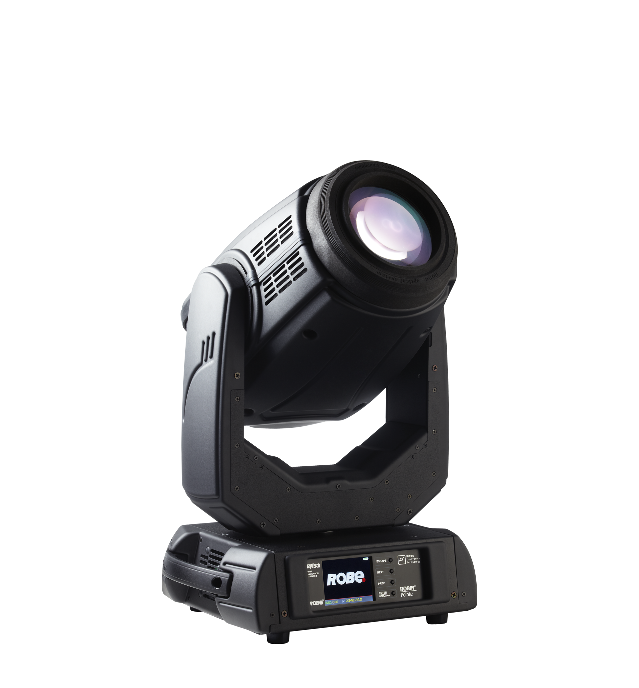

Pointe®
Описание товара:
Robin Pointe прожектор с полным движением Beam / Spot
Характеристики товара:
13 цветов, 14 фикс гобо, 9 вращ гобо, колесо анимации, 6 призм на двух колесах, фрост, угол луча 1.8° — 21° Beam, 3° — 42° Spot, фокусировка, диммер, строб, электронный баласт. DMX512 — 39 или 34 канала. Линза 150 мм. В комплекте с лампой Osram Sirius HRI 475/5 W. Освещенность 2200000 Люкс на 5 метрах.
Подробное описние товара
Он очень яркий и супер быстрый с острым параллельным лучем, который с легкостью прорезает пространство и не потеряется на фоне видео эффектов. Он способен проецировать статичное или вращающееся стеклянное гобо для создания пространственных и поверхностных эффектов, а также проекционных планов. Раскрытие луча 20° и кристально чистая цветопередача. Возможно добавить сюда вращающиеся в обоих направлениях линейную или округлую призмы создающие объемные эффекты на любых декорациях.
Подробные характеристики
Источник света:
- Короткодуговая газоразрядная лампа с отражателем
- Рекомендованная модель: Osram Sirius HRI 280 W RO
- Срок службы: 2000 часов @ 280 W, 3000 часов @ 230 W (эко режим)
- Управление: автоматическое и дистанционное вкл/выкл
- Балласт: Электронный
Оптическая система:
- Мощность светового потока: режим Beam: 82400 lx @ 20 m, режим Spot: 90000 lx @ 5 m
- Дихроичный стеклянный отражатель в лампе для максимальной эффективности
- Зум: режим Beam 2,5° — 10°, режим Spot 5° — 20°
Электромеханические эффекты:
- Колесо цвета: 13 дихроичных фильтров + открытая позиция
- Вращающееся колесо гобо: 9 положений, индексируемое, сменное (SLOT&LOCK) стеклянное + открытая позиция
- Статичное колесо гобо: 14 гобо + открытая позиция
- Призма 1: 8-фасеточная круговая, вращающаяся в обоих направлениях с изменяемой скоростью
- Призма 2: 6-фасеточная линейная, вращающаяся в обоих направлениях с изменяемой скоростью
- Призма 2: 6-фасеточная линейная, вращающаяся в обоих направлениях с изменяемой скоростью
- Диммер/шаттер: полнодиапазонное диммирование и изменяемый эффект стробоскопа
- Моторизованный зум и фокус: Pan: 540 °, Tilt: 270 °
Электропитание:
- Блок питания: электронная регулировка
- Напряжение: 100—240V, 50/60Hz
- Потребляемая мощность: 470W (230V / 50Hz)